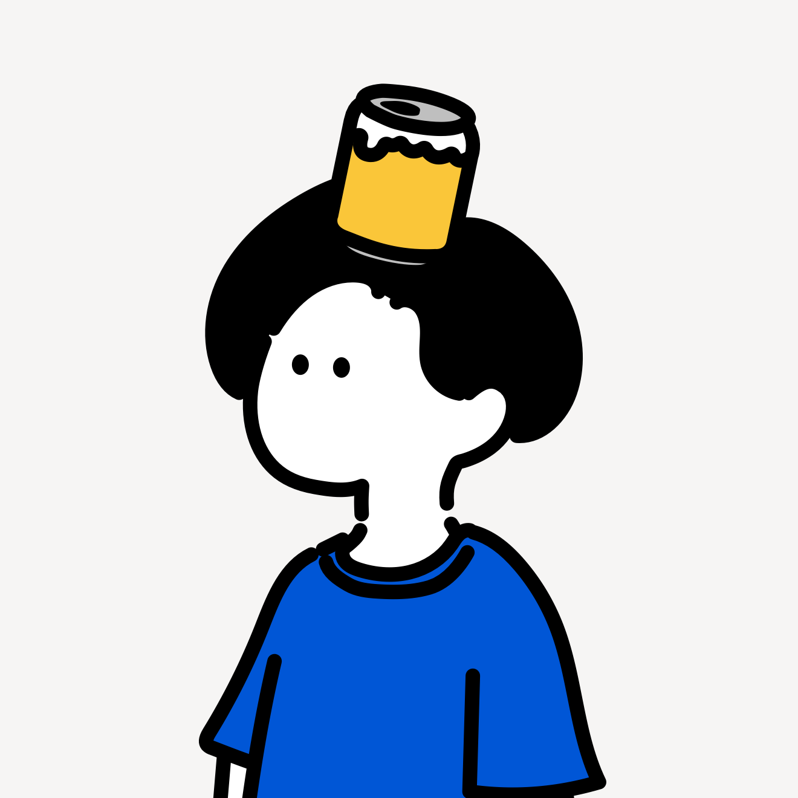
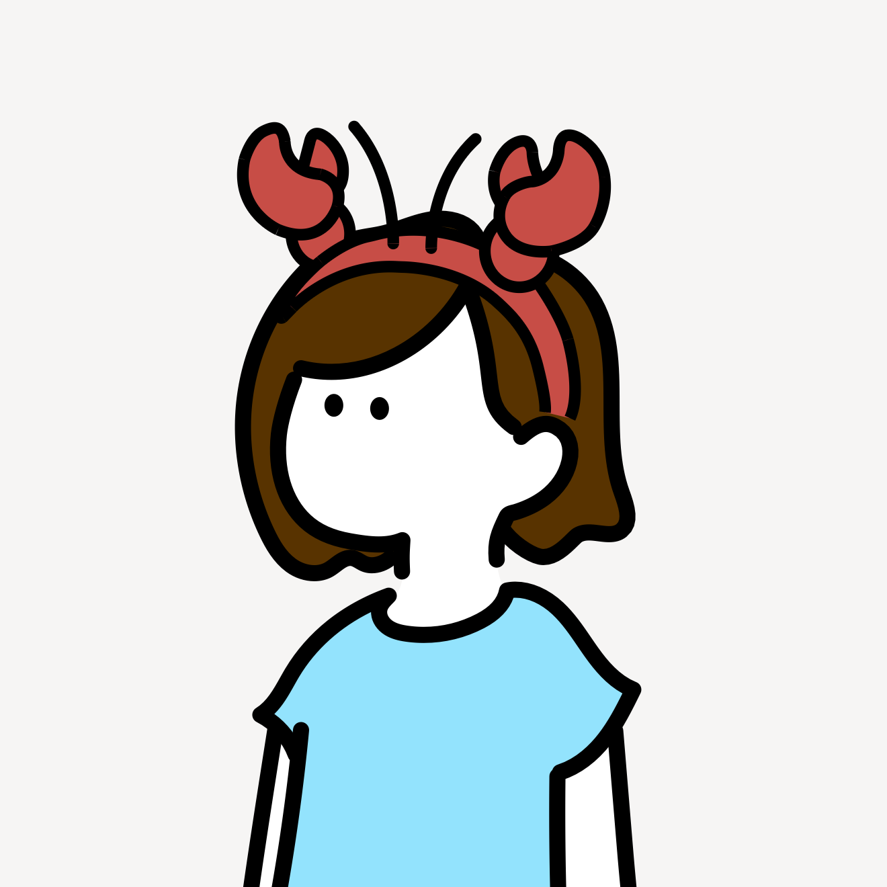

Our Story
KAMA Dailyとは
2025年、ニューヨーク・マンハッタンに引っ越してきた日本人夫婦によるブログです。
NY生活をちゃんと記録しておきたい——そんな思いからブログを始めました。日々の暮らしのこと、近郊へのお出かけ、旅行記など、生活のあれこれをマイペースに綴っていく予定です。
とにかく食べることが好きな二人なので、自然とレストランの記録が多くなりそうです。お店の雰囲気や食べたもの、適したシチュエーション、そして二人それぞれが感じたことを書いていければいいなと思っています。
マイペースに更新しながら、少しずつ育てていけたらと思っています。よろしくお願いします。
Profile
二人のこと

夫
KAMAO
カマオ
ステーキ、ハンバーグ、タコス、餃子、ラザニア、カルボナーラ……好きなものを挙げていくとキリがありませんが、わんぱくなラインナップであることは伝わるでしょうか。お酒も大好きで、ビール・ワイン・日本酒を好んで飲みます。NYに来てからはカクテルの魅力にもハマり、あれこれ探検中です。

妻
KAMAKO
カマコ
エビとホタテが大好きで、海鮮系の具材があるときはKAMAOのお皿からこっそり拝借することも。カフェとスイーツが担当エリアで、新しいベーカリーやデザートスポットを見つけるのが一番の楽しみです。街を歩きながらお店を探すのが、気づけば日課になっていました。
Rating